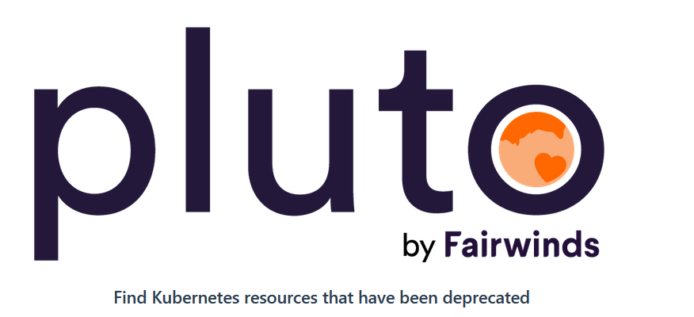

Monitoring Kubernetes API Deprecations With Pluto
If you've worked with Kubernetes for a while you should have seen that version lifecycle that Kubernetes has is pretty aggressive. Kubernetes is being actively developed which means that new releases come out pretty frequently - and all of us who are using Kubernetes, be it a managed or a self-hosted distribution, must adapt and adjust. If not, we may risk running our workloads on unsupported version of Kubernetes with lacking security and functionality fixes. In addition, when the time comes to upgrade there's a big risk that the change gap will be too large from the Kubernetes version you're running and the one you want to upgrade to - this normally ends up in a complicated and unstable upgrade process which I wouldn't recommend to anyone, especially in a production environment…😑
What makes Kubernetes releases a bit challenging is that every release normally has deprecated and removed APIs - some releases more than others. These breaking changes require us as Kubernetes operators to update our workloads and migrate from deprecated/removed APIs before upgrading the cluster. If you have multiple workloads running in Kubernetes clusters, continuously monitoring deprecations can get challenging and time-consuming. Especially if you need to ask developers to update deployment templates for the applications they own.
But there are tools that may help you get a better overview of resources that you need to update and even block upcoming deployment until respective resources are updated.
In this blog post I would like to take a look at an open source tool called Pluto and how it can be used to monitor Kubernetes APIs deprecations.😺
What is Pluto?

Pluto is an open source tool developed by Fairwinds that helps detect deprecated Kubernetes API versions both in:
- static manifests like Kubernetes YAML templates and Helm charts and
- live in Kubernetes clusters (Helm charts only).
You can run Pluto locally as well as integrate as part of your CI/CD pipeline. From what I've seen so far, the tool is quite actively developed and maintained and keeps up well with official Kubernetes releases and API deprecations/removals.
You can find official documentation for Pluto here: Pluto
Installing and Running Pluto
You can find all the code provided in this section in my GitHub repo: guidemetothemoon/div-dev-resources
I will not go through all of the installation and execution instructions in detail since all this information is available in the official documentation. What you need to know about the installation part is that Pluto can be installed directly from the binaries that are available on GitHub or with asdf plugin, brew or scoop depending on what OS you're using. More information regarding installation can be found here: Pluto - Installation.
When it comes to execution, there are 3 main commands you need to know of:
pluto detect-filescommand is used for detecting and scanning resources other than Helm charts, like Kubernetes YAML templates, in a specified directory.pluto detect-helmcommand is used for detecting and scanning Helm charts deployed in a running Kubernetes cluster.pluto detectcommand is used for scanning a Helm chart that isn't deployed, i.e. outside of a running Kubernetes cluster. For example, a Helm chart located in the source code.
There are a few other commands that you can use to customize Pluto execution even further like targeting a specific Kubernetes version, adding custom version checks, etc. You can find more information about available commands here Pluto - Advanced Usage or by running pluto -h command.
Now, let's take a look at how these commands can be used in different scenarios.
In-cluster Helm Chart scanning
You can run Pluto towards an active Kubernetes cluster, either locally from your command line or as part of CI/CD pipeline. Before you run below commands, please ensure that the user you're running with has necessary permissions set in the cluster and that the current context is set to the Kubernetes cluster you want to use. Once it's done you can detect and scan Helm charts in your cluster with help of this command:
pluto detect-helm -owide
If you want to limit it to a single namespace you can update the command like this:
pluto detect-helm -owide -n [namespace_to_scan]
If any deprecated or removed API versions have been detected in some of your resources, output will look similar to the one below:
NAME NAMESPACE KIND VERSION REPLACEMENT DEPRECATED DEPRECATED IN REMOVED REMOVED IN
kubecost/kubecost-grafana kubecost PodSecurityPolicy policy/v1beta1 true v1.21.0 false v1.25.0
kubecost/kubecost-cost-analyzer-psp kubecost PodSecurityPolicy policy/v1beta1 true v1.21.0 false v1.25.0
As you can see, Pluto provides quite a lot of information that may help you update the resources that are using deprecated/removed APIs.
CI/CD -> Azure DevOps
Pluto doesn't have an Azure DevOps extension that you could use directly in Azure Pipelines so you will need to use a script that downloads Pluto and executes the commands you want. I have created an example of a build pipeline definition and a script that you could use to achieve this.
Let's take a look at the pipeline first. You will need to check out those Azure DevOps repositories where you want Pluto to scan for deprecated and removed Kubernetes API versions. Then you will need to install Pluto on a build agent and call a script that runs all the necessary Pluto commands. An example of pipeline definition is provided below - replace project_name with Azure DevOps project name and repository_name with Azure DevOps repository name that you want to scan:
# api-deprecations-pipeline.yml
trigger:
- master
pool:
vmImage: ubuntu-latest
resources:
repositories: #check out those repositories that you want to scan with Pluto
- repository: [repository_name]
type: git
name: [project_name/repository_name]
ref: master
steps:
- checkout: self
submodules: true
persistCredentials: true
- checkout: '[repository_name]'
submodules: true
persistCredentials: true
- task: CmdLine@2
displayName: 'Install Pluto' # update Pluto version if needed in wget and tar command
inputs:
script: |
sudo apt-get update
echo Downloading Pluto...
wget github.com/FairwindsOps/pluto/releases/download/v5.10.1/pluto_5.10.1_linux_amd64.tar.gz
tar xzvf pluto_5.10.1_linux_amd64.tar.gz
echo Pluto downloaded successfully!
- task: Bash@3
displayName: 'Run Kubernetes API deprecations validation with Pluto'
inputs:
filePath: '$(System.DefaultWorkingDirectory)/validate-kube-api-deprecations.sh'
arguments: '$(System.DefaultWorkingDirectory)' # This argument lets the script know the location for checked out repos
As you can see in the last build task, we're calling a script that will execute the scan with Pluto. Let's check it out.
I've created a Bash script that can be used as a template that you can customize to your needs. As an argument it requires a path to the working directory where the repos are located - in our case it's default working directory in Azure DevOps. What the script does is that for every checked out repository it will first detect and scan non-Helm resources like Kubernetes YAML templates with help of pluto detect-files command. Then it will attempt to locate Helm charts and if any Helm charts exist, the script will render each Helm chart based on the standard values.yaml file and use pluto detect command to scan it further for deprecated and removed API versions.
1# scan-api-deprecations.sh
2
3reposToScan=("[repository_name") # in case of multiple repos, separate them with whitespace, f.ex. ("repo1" "repo2" "repo3")
4
5for repo in "${reposToScan[@]}"; do
6 repoDir="$1/$repo"
7
8 printf "\n*********** $repo ************\n"
9 printf "\nYAML TEMPLATES:\n"
10 ./pluto detect-files -d "$repoDir" -o markdown --ignore-deprecations --ignore-removals # 2 last parameters can be removed if you want script to fail in case deprecations/removals have been detected
11
12 IFS=$'\n'
13 helmChartsDir=($(find "$repoDir" -type f -iname "Chart.yaml"))
14 printf "\nHELM TEMPLATES:\n"
15
16 if [ -z "$helmChartsDir" ]; then
17 echo "No Helm templates found!"
18 continue
19 fi
20
21 for helmChartDir in "${helmChartsDir[@]}"; do
22 printf "\nLocated Helm Chart:$helmChartDir\n"
23 helmChartBaseDir="$(dirname "${helmChartDir}")"
24
25 helmValuesFile=$(find "$helmChartBaseDir" -type f -iname "values.yaml")
26
27 printf "\nLocated Helm values file:$helmValuesFile -> checking...\n"
28 helm template "$helmChartBaseDir" -f "$helmValuesFile" | ./pluto detect - -o markdown --ignore-deprecations --ignore-removals
29 done
30 printf "\n*******************************\n"
31done
32
33echo "Pluto executed scanning successfully!"
If you're using custom Helm values file you can replace line 25 -> helmValuesFile=$(find "$helmChartBaseDir" -type f -iname "values.yaml") of the script above with the code block below and customize regex expression according to the file names you're using in your projects. In my example, it's values-prod.yaml or deploy-values.yaml.
helmValuesFile=$(find "$helmChartBaseDir" -type f -regextype posix-extended -iregex '.*values-prod.yaml|.*deploy-values.yaml')
if [ -z "$helmValuesFile" ]; then
helmValuesFile=$(find "$helmChartBaseDir" -type f -iname "values.yaml")
fi
The output in the build pipeline will look something like this:
*********** my-repo-name ************
YAML TEMPLATES:
| NAME | NAMESPACE | KIND | VERSION | REPLACEMENT | DEPRECATED | DEPRECATED IN | REMOVED | REMOVED IN |
|----------------------------|-------------------|---------------|--------------------------|--------------------|------------|---------------|---------|------------|
| letsencrypt-http01-prod | <UNKNOWN> | ClusterIssuer | cert-manager.io/v1alpha2 | cert-manager.io/v1 | true | v1.4.0 | false | v1.6.0 |
| letsencrypt-http01-staging | <UNKNOWN> | ClusterIssuer | cert-manager.io/v1alpha2 | cert-manager.io/v1 | true | v1.4.0 | false | v1.6.0 |
| testservicea-tls-cert | testservicea | Certificate | cert-manager.io/v1alpha2 | cert-manager.io/v1 | true | v1.4.0 | false | v1.6.0 |
| testserviceb-tls-cert | testserviceb | Certificate | cert-manager.io/v1alpha2 | cert-manager.io/v1 | true | v1.4.0 | false | v1.6.0 |
HELM TEMPLATES:
Located Helm Chart:/home/vsts/work/1/s/my-repo-name/test-service-a/helm/test-service-a/Chart.yaml
Located Helm values file:/home/vsts/work/1/s/my-repo-name/test-service-a/helm/test-service-a/Chart.yaml/deploy-values-prod.yaml -> checking...
| NAME | NAMESPACE | KIND | VERSION | REPLACEMENT | DEPRECATED | DEPRECATED IN | REMOVED | REMOVED IN |
|--------------------------------------------------|-----------|-------------------------|---------------------|----------------|------------|---------------|---------|------------|
| test-service-a-pdb | <UNKNOWN> | PodDisruptionBudget | policy/v1beta1 | policy/v1 | true | v1.21.0 | false | v1.25.0 |
| test-service-a-hpa | <UNKNOWN> | HorizontalPodAutoscaler | autoscaling/v2beta1 | autoscaling/v2 | true | v1.22.0 | false | v1.25.0 |
The script above is configured to succeed even though deprecated or removed API versions have been detected. If you want the build to fail you can update the script and remove --ignore-deprecations and --ignore-removals parameters. For more information on Pluto error codes, check here: Pluto - CI Pipelines.
CI/CD -> GitHub Actions
If you want to run Pluto as part of your GitHub workflow, there is a separate GitHub action that you can use to download Pluto. For executing Pluto there is no separate GitHub action but you can use Pluto commands directly:
- uses: actions/checkout@v2
- name: Install Pluto
uses: FairwindsOps/pluto/github-action@master
- name: Run Kubernetes API deprecations validation with Pluto
run: |
pluto detect-files -d "[nonhelm_templates_dirpath]" -o markdown --ignore-deprecations --ignore-removals
helm template "[helm_chart_dirpath]" -f "[helm_chart_dirpath]/values.yaml" | pluto detect - -o markdown --ignore-deprecations --ignore-removals
You can find a working example of running Pluto as part of GitHub workflow in my repo: guidemetothemoon - kubernetes-pluto-gha.yml.
Local files
Finally, if you want to scan resources locally, outside of CI/CD pipeline, you can trigger the same script that we used with Azure Pipelines in the section above, and provide a folder to scan as an input to the script, like this:
./scan-api-deprecations.sh '[repo_dirpath_to_scan]'
Alternative tools
There are a few other tools available that serve the same purpose as Pluto which is good for you to know about, so that you have all the information needed to take the best decision depending on your scenario. I've chosen Pluto due to it's simplicity, easy installation, support for both in-cluster scanning and scanning of static files residing in the source code outside of a running Kubernetes cluster. In addition, as part of the output Pluto lets you know which version of Kubernetes the deprecated API will be removed in and what the replacement API is. All in all, Pluto just had all the functionality needed to cover the needs in my scenario. And it may be the case for you as well!😉
- kubent: quite popular alternative to Pluto, was initially developed to perform scanning in the running Kubernetes cluster but support for specifying file name was added back in 2020. From what I can see you need to explicitly provide file names that you want to scan and it's not supported to provide a directory name, like for example in Pluto. Also, it doesn't look like it's supported to check Helm charts locally, i.e. outside of the running cluster.
- popeye: first of all, I need to say that I just love the colorfullness of this tool!😸 Popeye is a Kubernetes cluster sanitizer which checks a running cluster towards a collection of best practices and can integrate data it collects with your Kubernetes metrics server. There's a limited number of resources it currently supports: Nodes, Namespaces, Pods and Services. It doesn't support scanning static manifests.
- kdave: this tool and the one below are quite new and are being developed by the same contributors from the company called Wayfair. kdave supports exporting data about deprecated and removed API versions in a Prometheus metrics format. It includes 2 components: kdave-server to check deployed Helm releases in a running Kubernetes cluster and kdave-cli to check resources locally or as part of CI/CD. From what I could find CLI does supports both Helm charts and other sources like Kubernetes YAML templates. kdave-server supports only Helm charts.
- k8s-used-api-versions: a Kubernetes Operator that collects information about deprecated and removed API versions from various resources in the running Kubernetes cluster. Supports exproting this informaiton in a Prometheus metrics format. Runs only in-cluster.
Do you know of any other tools that should be added to this list? Let me know! 😼
Additional resources
Below you may find a few resources that may be helpful for you when working with Pluto and Kubernetes API deprecations in general:
- Scripts and templates used in this blog post
- GitHub CI/CD example with Pluto
- Pluto - GitHub repo
- Kubernetes - Deprecated API Migration Guide
That's it from me this time, thanks for checking in!💖
If this article was helpful, I'd love to hear about it! You can reach out to me on LinkedIn, Twitter, GitHub or by using the contact form on this page.😺
Stay secure, stay safe.
Till we connect again!😻